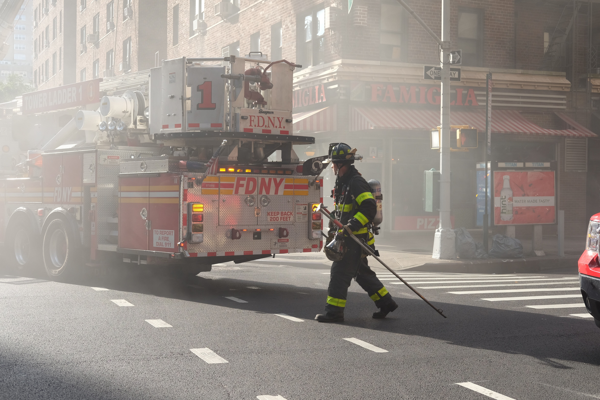

Fatal fires are rising citywide, particularly among immigrant and POC neighborhoods
FDNY says lithium battery fires are driving the trend

New York City’s civilian fire deaths and injuries have been steadily increasing since 2018. With last weekend’s fire, that tragically killed three generations of a Crown Heights, Brooklyn African-American family with roots from South Carolina, there have now been an estimated 94 fire-deaths citywide since January 1, the highest number of fatal fires in five years. The majority of these deadly NYC fires occur in diverse neighborhoods, heavily impacting immigrant households, families of color, and low-income individuals, who often don’t have access to fire safety education, adequate, reliable safe housing or related access to material and resources in their language of choice. It’s unclear what borough has the highest number of fatal fires in 2023 or 2022, but typically, outer boroughs, including the Bronx, Brooklyn and Queens have consistently had high fire numbers for decades.
While there are multiple reasons for the trend of increasing fires in immigrant/POC homes and immigrant and POC-headed small businesses, lithium-associated fires in both residential and commercial businesses have caused untold loss of life, injuries, hospitalizations and property damage within New York City’s five boroughs. Since 2020 with the rise of e-bikes, e-scooters and other vehicles that contain lithium batteries, including legal registered and unregulated non-legal/substandard vehicles, unsafe charging and spontaneous fires or explosions have caused an uptick in both structural and nonstructural fires in all five boroughs in New York City.
subhead
FDNY.......
new graf ....
subhead
FDNY.......
new graf ....